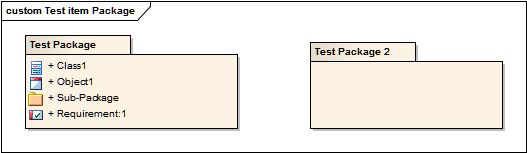

A Package represented as an element on a diagram provides a shorthand annotation referring to all of its contents as a single
entity. This removes the need to have to restate them each time that a concept / package is referred to. Package Elements
may also be collectively represented on Diagram Packages, as a means of helping users understand model hierarchies and content.
packages represented as elements on a diagram
packages represented as elements on a diagram
Packages represented on a Diagram as Elements; contents can be visible or hidden (this collection for illustration purposes
only)
The purpose behind representing Package Elements on diagrams is to reduce having to remodel all the constituent parts of a
concept or structure repeatedly by elaborating the package and its contents as a single entity. A Package Element is represented
on a diagram as a visual representation of an individual package element within the model; the element may also show some
of its content (typically to the first-level — CASE Toolset dependent).
A ‘Package Diagram’ consists solely of packages elaborated to provide an overview of the package content within a model or
to represent hierarchies within it; relationships between packages may also be modelled using associations. Package Diagrams
can be used to represent the packages within all or part of a model.
The construction of UML Package Elements on Diagrams and Package Diagrams is defined within the generic Packages Core Notations section.